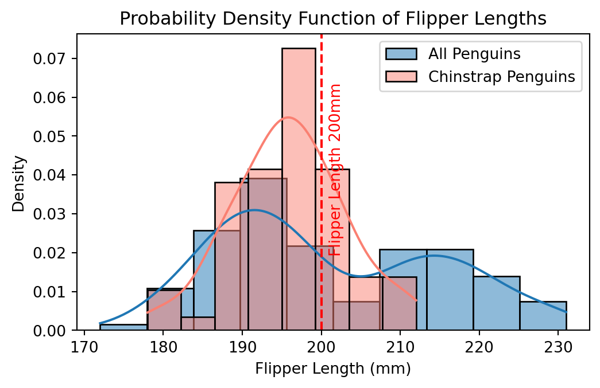

In our day to day life we have to make random decisions. For that we decide if one even is likely to occur. This likelihood is called probability. Now if I say how much is the probability of getting Head or Tail in a coin toss the math will tell us it has a 50/50 chance. But that rarely happens when you do a coin toss mulitple times. The magic is when you do it for a large number or times, the chances goes closer and closer to the mathematical probability. That is the magic happening in real time with large number of events.
Introducing Bayes’ Theorem
Bayes’ Theorem helps us understand how the probability of an event changes as we gain more information.
Mathematical Representation Bayes’ Theorem is mathematically expressed as:
\[
P(A | B) = \frac{P(B | A) \times P(A)}{P(B)}
\]
Where:
\(P(A | B)\) is the probability of event A occurring given that B is true.
\(P(B | A)\) is the probability of event B occurring given that A is true.
\(P(A)\) is the probability of event A.
\(P(B)\) is the probability of event B.
Bayes’ Theorem in Action!
Bayes’ Theorem Application on Penguin Dataset
We have a dataset containing different species of penguins, and we’re interested in two species: Adelie and Chinstrap. Our goal is to answer:
“What is the probability that a penguin is of the Chinstrap species given that it has a certain flipper length?”
To use Bayes’ Theorem, we need the following probabilities:
The prior probability \(P(\text{Chinstrap})\): The overall probability of a penguin being a Chinstrap species in the dataset.
The likelihood \(P(\text{Flipper Length} \mid \text{Chinstrap})\): The probability of observing the specific flipper length given that the penguin is a Chinstrap.
The marginal probability \(P(\text{Flipper Length})\): The overall probability of observing this specific flipper length among all penguins in the dataset.
import pandas as pdimport seaborn as snsfrom scipy import stats# Load the penguins datasetdf = sns.load_dataset("penguins")# Let's assume we are interested in a flipper length of 200 mmflipper_length =200p_chinstrap =len(df[df['species'] =='Chinstrap']) /len(df)chinstrap_data = df[df['species'] =='Chinstrap']['flipper_length_mm'].dropna()likelihood = stats.norm(chinstrap_data.mean(), chinstrap_data.std()).pdf(flipper_length)all_flipper_data = df['flipper_length_mm'].dropna()marginal = stats.norm(all_flipper_data.mean(), all_flipper_data.std()).pdf(flipper_length)# Apply Bayes' Theorembayes_result = (likelihood * p_chinstrap) / marginalbayes_result
0.3290309502085686
Probability Density Function (PDF)
A PDF is a function that describes the relative likelihood for a continuous random variable to take on a given value. In simpler terms, it shows how the values of a continuous variable are distributed.
In a PDF, the y-axis represents the density, not the probability. For continuous random variables, the probability of observing any single exact value is essentially zero because there are infinitely many possible values. Instead, the area under the curve of the PDF within a range of values indicates the probability of the variable falling within that range.The total area under the PDF curve equals 1, representing the total probability space.
import matplotlib.pyplot as pltplt.figure(figsize=(6, 3.5))# Plot for all penguinssns.histplot(all_flipper_data, kde=True, stat="density", label='All Penguins')# Plot for Chinstrap penguinssns.histplot(chinstrap_data, kde=True, stat="density", color='salmon', label='Chinstrap Penguins')plt.axvline(x=flipper_length, color='red', linestyle='--')plt.text(flipper_length+1, 0.02, f'Flipper Length {flipper_length}mm', rotation=90, color='red')plt.title('Probability Density Function of Flipper Lengths')plt.xlabel('Flipper Length (mm)')plt.ylabel('Density')plt.legend()plt.show()

When dealing with continuous data (like flipper length in penguins), the concepts of prior, likelihood, and posterior in Bayes’ Theorem are represented as continuous probability distributions, and these are often expressed as PDFs.
In our penguin dataset, we used Bayes’ Theorem to update the probability of a penguin being of the Chinstrap species given its flipper length. The prior probability (belief about the proportion of Chinstrap penguins before seeing the flipper length), likelihood (probability of observing a certain flipper length given that the penguin is a Chinstrap), and the marginal probability (overall probability of observing this flipper length) are all part of this Bayesian update mechanism.
The PDFs represent these probabilities for the continuous variable of flipper length. By calculating the area under these curves (or using a probability density function to get a specific density value), we are able to apply Bayes’ Theorem in a context where the variables are continuous.